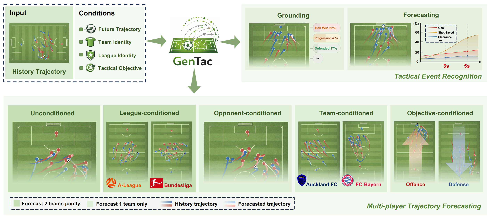
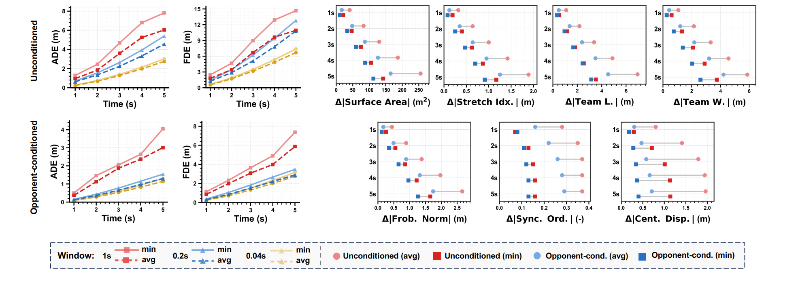
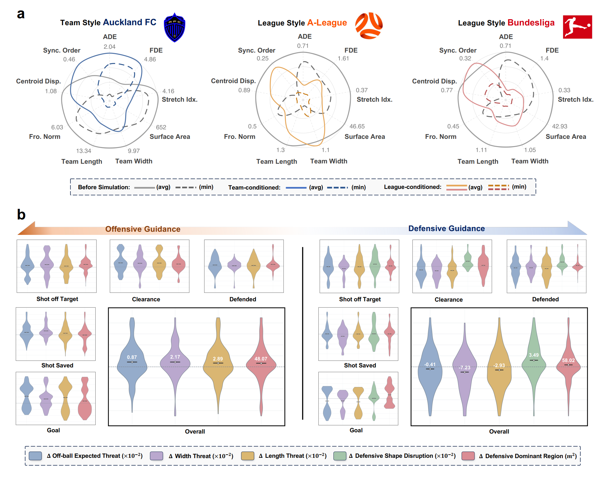
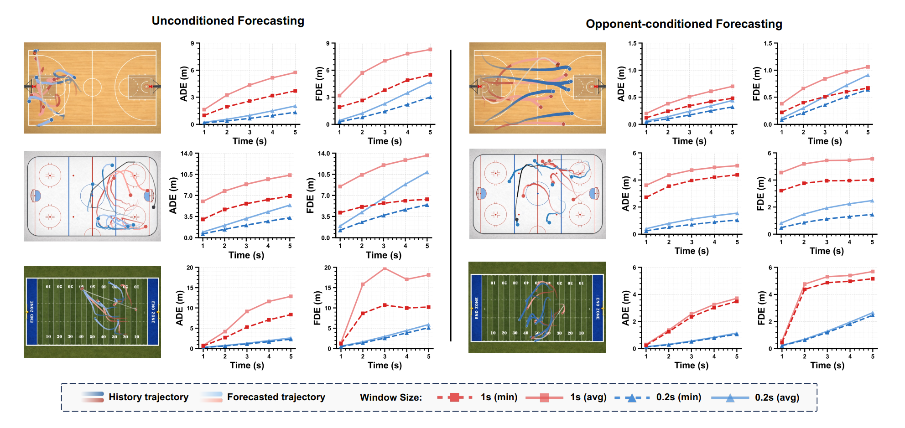
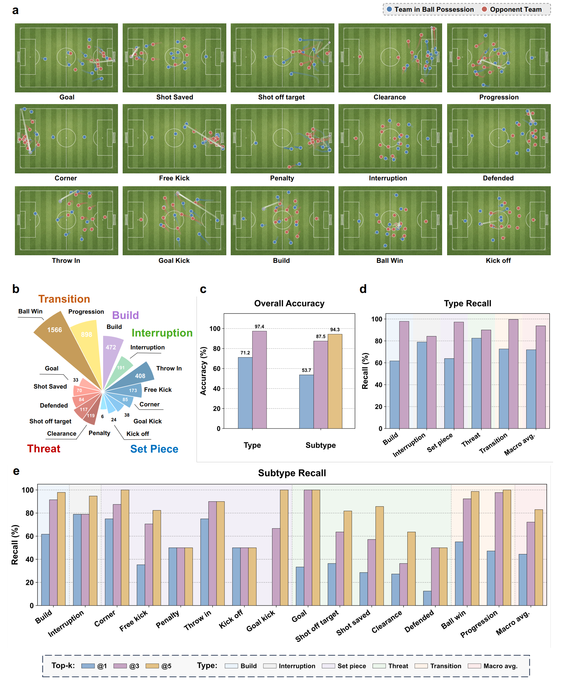
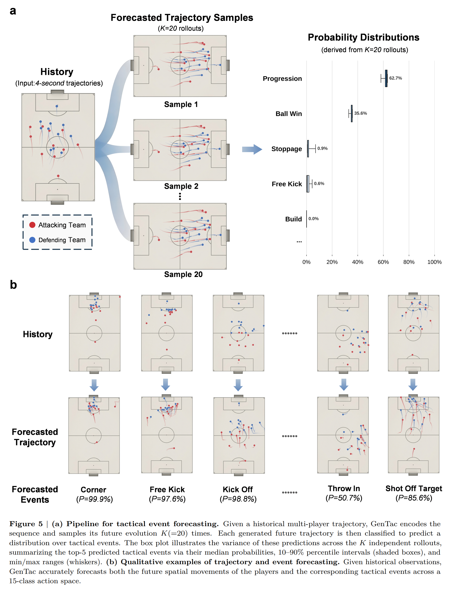
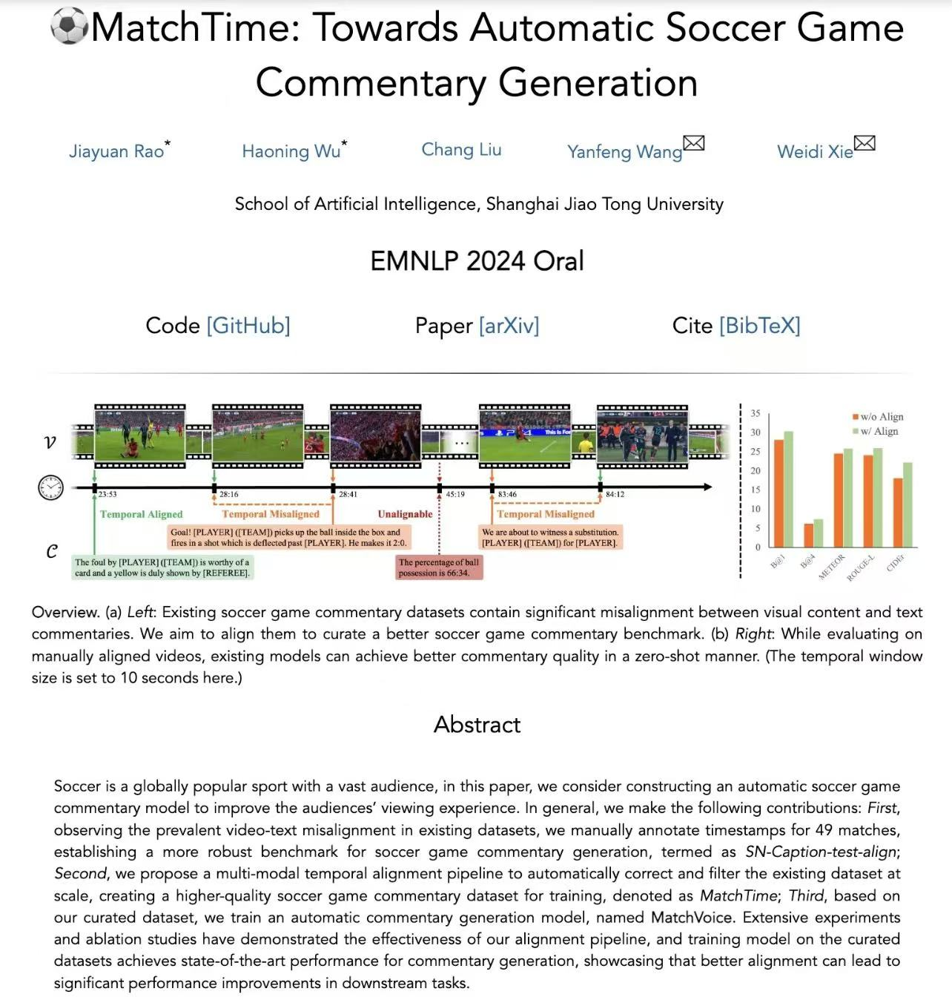
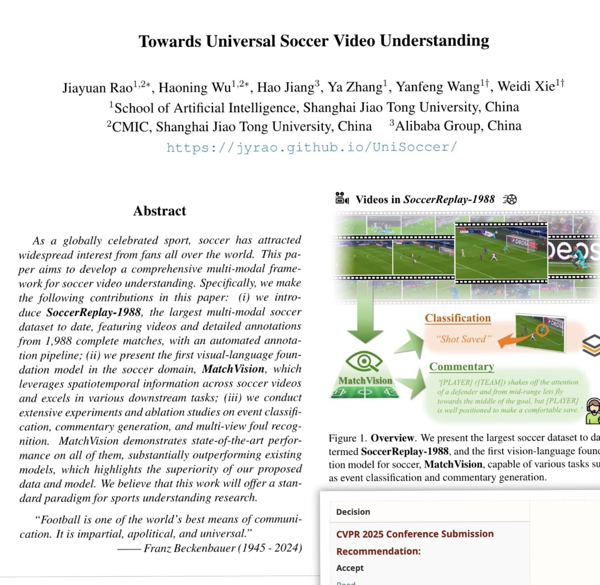
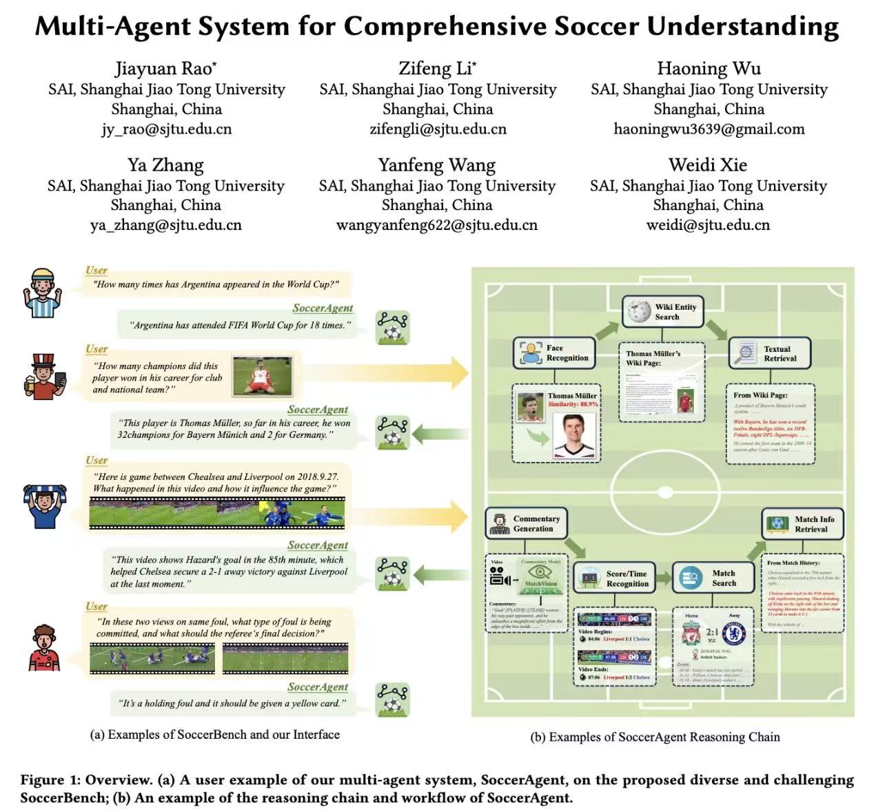
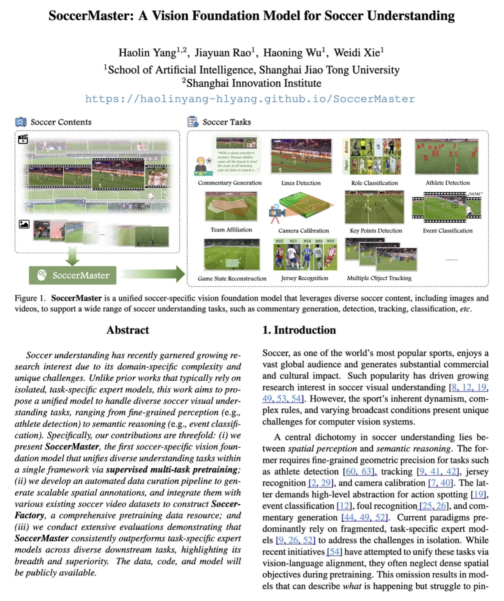

Geometric accuracy with preserved collective team structure.
Overview
Football tactics as conditional evolution.
GenTac formulates soccer tactics as a stochastic evolution of multi-player trajectories and tactical semantics. From the same match context, the model can generate plausible futures, recognize the semantic event a trajectory expresses, and forecast what tactical outcome may emerge next.
By unifying trajectory forecasting, event anticipation, and counterfactual simulation, GenTac establishes a generative foundation for decoding complex multi-agent dynamics in sports AI.
Style simulation across teams and leagues, including Auckland FC, A-League, and German leagues.
Controllable counterfactuals that alter spatial control and expected threat under offensive or defensive guidance.
Future tactical outcomes anticipated directly from generated rollouts.
Cross-sport generalization to basketball, American football, and ice hockey through the same generative view.

Tasks
Two tasks, one tactical representation.
Task 1
Multi-Player Trajectory Forecasting
Forecast the future 2D movement of all players and the ball, while keeping the generated game evolution coherent at the team and interaction level.
Synchronized rollout Forecast both teams jointly, preserving team shape and interaction structure.
Opponent-conditioned movement Predict how players adapt their runs and spacing against a given opponent.
Team and league style simulation Generate futures that reflect club-level and league-level tactical tendencies.
Objective-guided tactics Steer rollouts with attacking or defensive guidance for counterfactual analysis.
Task 2
Tactical Event Grounding and Forecasting
Connect continuous motion to tactical semantics: what phase is unfolding now, and what event is likely to emerge from generated futures?
Grounding
Map observed or generated trajectories into a 15-class tactical event space.
Forecasting
Anticipate future tactical outcomes directly from generated match rollouts.
TacBench
A benchmark for motion, semantics, and tactical control.
TacBench evaluates both sides of GenTac: trajectory forecasting over full multi-player motion and tactical event understanding over annotated semantic phases. TacBench-Trajectory contains synchronized 15-second open-play clips with every player and the ball on the pitch, supporting joint, opponent-conditioned, style-conditioned, and objective-guided forecasting.
TacBench-Event
Macro-categories and subtypes
Hover the chart
Macro-category and subtype counts
Results
From field geometry to tactical meaning.
Figure 1
Forecasting accuracy and collective structure.
GenTac forecasts up to 5 seconds into the future, reporting ADE/FDE for trajectory accuracy and collective metrics such as surface area, stretch index, team length, team width, pairwise-distance structure, synchronization, and centroid displacement.

Figure 2
Conditioning turns generation into tactical steering.
Team, league, offense, and defense conditions reshape generated trajectories while preserving coherent collective structure.

Figure 3
The same generative view travels beyond soccer.
GenTac is evaluated on basketball, American football, and ice hockey tracking data, showing strong multi-agent forecasting behavior across sports.

Figure 4
TacBench grounds trajectories in events.
The benchmark covers 15 tactical subtypes across build-up, transition, interruption, set piece, and threat phases.

Figure 5
Generated futures become event forecasts.
Multiple rollouts produce a distribution over tactical outcomes, exposing not only the predicted event but the spatial route toward it.

Vision
GenTac points toward a tactical science where massive tracking data no longer stays as archived match traces, but becomes a living simulator for football intelligence: testing decisions, comparing futures, studying team identity, and building models that reason about the game as coaches do, through space, timing, pressure, and intent.
Prev. Works
A growing stack for soccer intelligence.
GenTac continues a line of work that moves from commentary and universal video understanding toward multi-agent reasoning, soccer foundation models, and finally tactical simulation.
EMNLP 2024 Oral
MatchTime
Temporal alignment for soccer dense captioning and AI-driven soccer commentary generation.

CVPR 2025UniSoccer
Large-scale soccer dataset construction and unified modeling across soccer understanding tasks.

ACM MM 2025SoccerAgent
A multimodal benchmark and multi-agent system for comprehensive soccer understanding.

CVPR 2026 OralSoccerMaster
A soccer vision foundation model trained with large-scale multi-task supervised pretraining.

Citation
Reference
@article{rao2026gentac,
title={GenTac: Generative Modeling and Forecasting of Soccer Tactics},
author={Rao, Jiayuan and Gui, Tianlin and Wu, Haoning and Wang, Yanfeng and Xie, Weidi},
journal={arXiv preprint arXiv:2604.11786},
year={2026}
}